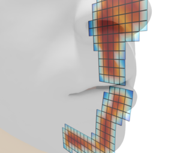

|

|
|
Abstract:
Level sets have been established as highly versatile implicit surface representations, with widespread use in graphics applications including modeling and dynamic simulation. Nevertheless, level sets are often presumed to be limited, compared to explicit meshes, in their ability to represent domains with thin topological features (e.g. narrow slits and gaps) or, even worse, material overlap. Geometries with such features may arise from modeling tools that tolerate occasional self-intersections, fracture modeling algorithms that create narrow or zero-width cuts by design, or as transient states in collision processing pipelines for deformable objects. Converting such models to level sets can alter their topology if thin features are not resolved by the grid size. We argue that this ostensible limitation is not an inherent defect of the implicit surface concept, but a collateral consequence of the standard Cartesian lattice used to store the level set values. We propose storing signed distance values on a regular hexahedral mesh which can have multiple collocated cubic elements and non-manifold bifurcation to accommodate non-trivial topology. We show how such non-manifold level sets can be systematically generated from convenient alternative geometric representations. Finally we demonstrate how this representation can facilitate fast and robust treatment of self-collision in simulations of volumetric elastic deformable bodies.
|

![[PHOTO]](../../images/knight_small.png)